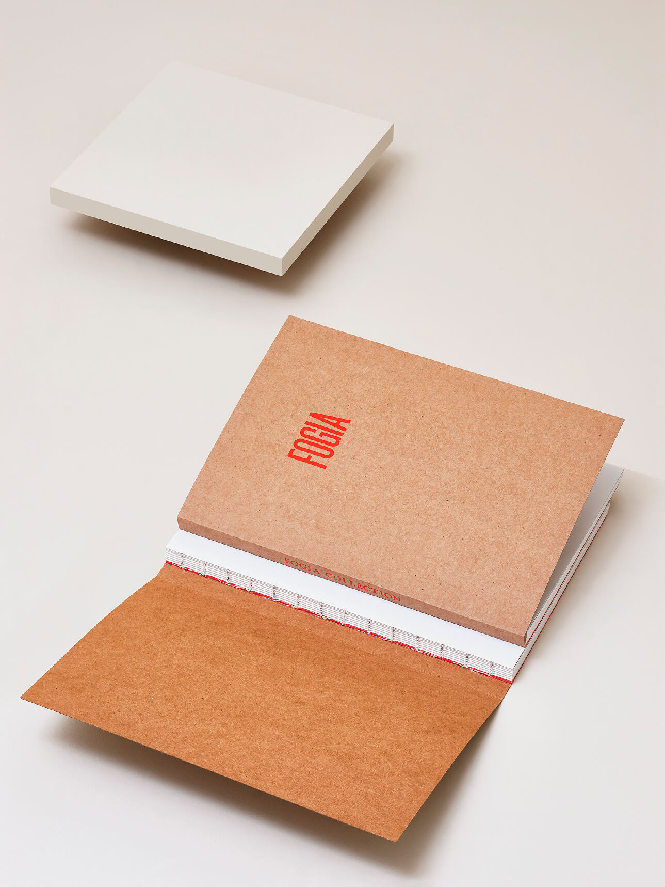
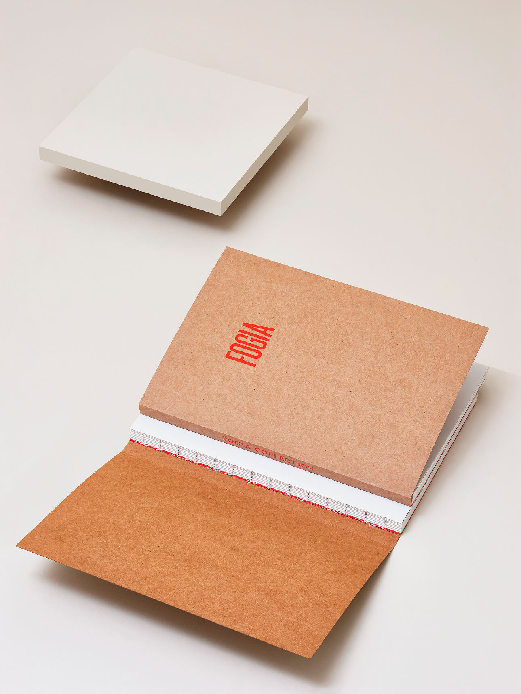

(A) Fogia Collection 2020
Art Direction & Printed Matter (with Note Design Studio)
Photoshoot & printed matter for Fogia Collection 2020.
Exhibited during Stockholm Furniture Fair 2020.


 

Creative direction by Note Design Studio. Photography by Frida-My Sundqvist.
Styling by Amanda Ljungqvist. Retouch by Jenny Grip.
(B) Beckmans x Paris Fashion Week
Fashion Art Direction
Art direction for Beckmans x Paris Fashion Week 2018.
Shown in Paris during fashion week.


Art direction by me & Agnes Vannerus Lindblom. Photography by Cornelia Wahlberg.
Clothes by Amanda Borgfors Mészàros, Sissel Kärneskog, Alecsander Rothschild, Josephine Johnzon & Rave Review.
© Johanna Welin Lundberg